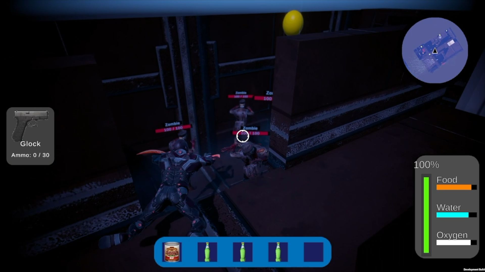
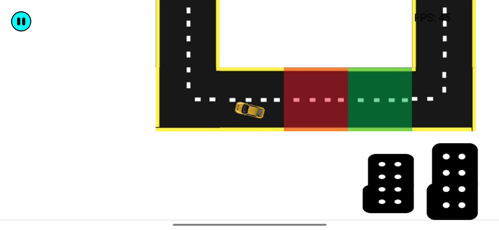

Depths of the Abyss is an action survival game where the player playsa as a survivor of a crashed submarine. The player will have to defeat multiple zombies and defeat the final boss while managing food, water and oxygen.
Play Now:
Depths Of The AbyssBrew bound is a mixed reality game where players will need to brew potions and sell the potions to various customers in different region of the map. Players will move around the map by steering the couldron and pressing the pump
Play Now:
BrewboundDriving Pro 2D is a 2-dimensional top down driving game that was made to encourage users to drive safe. The user will have to obey stop signs and traffic light while trying not to crash. A score will be given to the users after they complete the game.
Play Now:
Driving Pro 2D